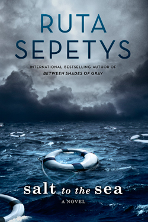

Young Adult, Historical
Salt to the Sea
Girl in the Blue Coat

An incredible story. Sepety's writing is both beautiful and heartbreaking.
Winter, 1945. Four teenagers. Four secrets.
Each one born of a different homeland; each one hunted, and haunted, by tragedy, lies…and war.
As thousands of desperate refugees flock to the coast in the midst of a Soviet advance, four paths converge, vying for passage aboard the Wilhelm Gustloff, a ship that promises safety and freedom.
Yet not all promises can be kept.
Inspired by the single greatest tragedy in maritime history, bestselling and award-winning author Ruta Sepetys (Between Shades of Gray) lifts the veil on a shockingly little-known casualty of World War II. An illuminating and life-affirming tale of heart and hope.
Young Adult, YA Historical Fiction
A stunning and heart-wrenching story showing a unique perspective on WWII, and the way it affected the lives of everyone during the time period. A truly unforgettable and utterly incredible story that will stay with you long after you’ve finished reading it.
Amsterdam, 1943. Hanneke spends her days finding and delivering sought-after black market goods to paying customers, nights hiding the true nature of her work from her concerned parents, and every waking moment mourning her boyfriend, who was killed on the Dutch front lines when the German army invaded. Her illegal work keeps her family afloat, and Hanneke also likes to think of it as a small act of rebellion against the Nazis.
On a routine delivery, a client asks Hanneke for help. Expecting to hear that Mrs. Janssen wants meat or kerosene, Hanneke is shocked by the older woman’s frantic plea to find a person: a Jewish teenager Mrs. Janssen had been hiding, who has vanished without a trace from a secret room. Hanneke initially wants nothing to do with such a dangerous task but is ultimately drawn into a web of mysteries and stunning revelations—where the only way out is through.
Beautifully written, intricately plotted, and meticulously researched, Girl in the Blue Coat is an extraordinary, unforgettable story of bravery, grief, and love in impossible times.